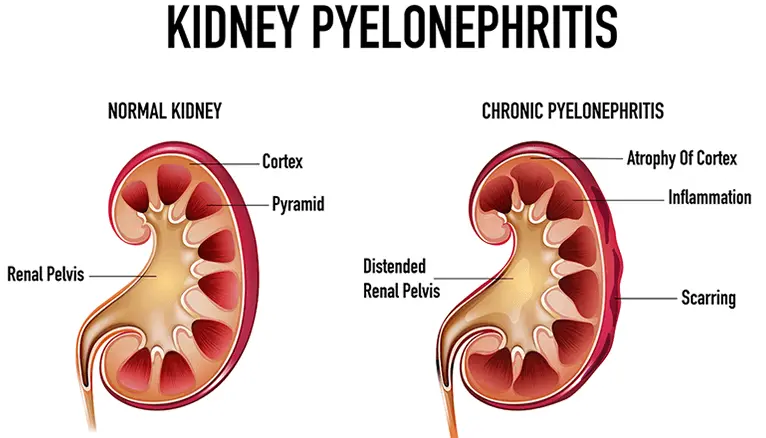
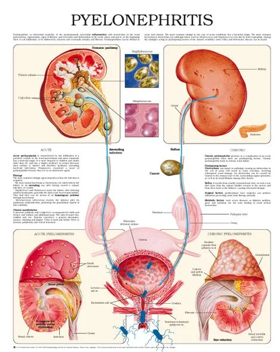
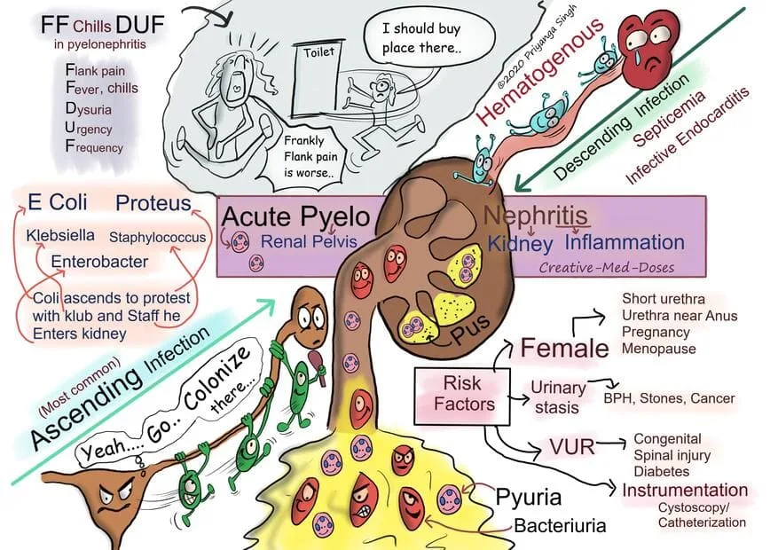

Expanded Nursing Uganda Explanation
Pyelonephritis should be understood beyond a short definition. Link the concept to patient history, focused assessment, common risks, nursing priorities, documentation and evaluation of outcomes.
Contents, 14 sections (tap to expand)
01 PYELONEPHRITIS
The term “ Pyelonephritis ” originates from Greek:
- “ Pyelum ” (or “Pyelos”) meaning renal pelvis .
- “ Nephros ” meaning kidney .
- “ -itis ” meaning inflammation .
Pyelonephritis is an inflammation of the kidney parenchyma (the functional tissue) and the renal pelvis (the collecting system) .
It is fundamentally an upper urinary tract infection ( UTI ). It most commonly results from an ascending infection , where bacteria travel upwards from the lower urinary tract (bladder – cystitis, urethra – urethritis) to infect the kidney(s). Less commonly, it can result from hematogenous (bloodstream) spread from another infection site.
Epidemiology of Pyelonephritis
- More common in females than males, largely due to anatomical factors (shorter urethra, proximity to the anus).
- Incidence peaks in young, sexually active women, pregnant women, and older adults (often associated with comorbidities like BPH or neurogenic bladder).
- Significant cause of morbidity and healthcare expenditure, including hospitalizations.
02 Pathophysiology of Pyelonephritis
Ascending Route (Most Common):
- Colonization : Uropathogenic bacteria (most often from the fecal flora) colonize the periurethral area.
- Urethral Ascent: Bacteria ascend the urethra into the bladder, often facilitated by factors like sexual intercourse or catheterization.
- Bladder Multiplication : Bacteria multiply within the bladder (cystitis).
- Vesicoureteral Reflux (VUR) : Normally, the ureterovesical junction prevents urine backflow. If this mechanism is incompetent (due to congenital abnormality, inflammation, high bladder pressures, or obstruction), infected urine refluxes up the ureter(s) to the renal pelvis.
- Intrarenal Reflux : Infected urine can then reflux further from the renal pelvis into the renal tubules, particularly at the poles of the kidney where papillae structure may be more permissive.
- Parenchymal Invasion & Inflammation : Bacteria invade the renal interstitium, triggering an acute inflammatory response involving neutrophils, edema, and cytokine release. This leads to tubulointerstitial nephritis.
Hematogenous Route (Less Common):
- Occurs when bacteria from another infected site (e.g., endocarditis, osteomyelitis) travel through the bloodstream and seed the kidneys.
- Often associated with specific organisms (e.g., Staphylococcus aureus, Candida spp.) and may result in multiple small abscesses.
- Bacterial Virulence Factors : Certain bacterial characteristics enhance their ability to cause pyelonephritis, e.g., P-fimbriae in E. coli promote adherence to uroepithelial cells.
- Host Defense Mechanisms : Include flushing action of urine flow, urine pH and osmolality, anti-adherence factors (Tamm-Horsfall protein), secretory IgA, and the integrity of the ureterovesical junction. Impairment of these defenses increases risk.
03 Etiology (Causative Organisms)
Gram-Negative Bacteria (Most Common):
- Escherichia coli (E. coli) : Responsible for 75-95% of cases, especially community-acquired.
- Proteus mirabilis: Often associated with kidney stones (struvite) due to urease production.
- Klebsiella pneumoniae : More common in hospital-acquired or complicated cases.
- Enterobacter spp .
- Pseudomonas aeruginosa : Often seen in catheter-associated or recurrent infections.
Gram-Positive Bacteria (Less Common):
- Staphylococcus saprophyticus : Particularly in young, sexually active women.
- Enterococcus faecalis : More common in hospitalized patients or those with prior instrumentation.
- Staphylococcus aureus : Suggests possible hematogenous spread.
04 Risk Factors of Pyelonephritis
- Female Gender : Shorter urethra, proximity to rectum.
- Urinary Tract Obstruction : Anything blocking urine flow increases stasis and risk of infection (e.g., kidney stones, benign prostatic hyperplasia (BPH), tumors, strictures, pregnancy-related compression).
- Vesicoureteral Reflux (VUR) : Especially important in children and chronic pyelonephritis.
- Instrumentation : Urinary catheters, cystoscopy, surgery.
- Sexual Activity: Particularly in women (increases risk of urethral colonization).
- Pregnancy : Hormonal changes cause ureteral dilation and decreased peristalsis; mechanical compression by the uterus.
- Neurogenic Bladder : Incomplete bladder emptying (e.g., spinal cord injury, spina bifida, multiple sclerosis).
- Diabetes Mellitus : Impaired immune function, glucosuria (promotes bacterial growth), autonomic neuropathy affecting bladder emptying.
- Immunosuppression : HIV/AIDS, chemotherapy, long-term steroid use, organ transplant recipients.
- Congenital Abnormalities : Of the urinary tract.
- Previous UTIs : History of recurrent infections.
05 Classification & Specific Types of Pyelonephritis
****
06 ACUTE PYELONEPHRITIS
This is characterized by acute inflammation of the parenchyma (core substance of the kidney/kidney tissue) and the pelvis of the kidneys, Characterized by a sudden onset of symptoms. ****
The disease may be bilateral or unilateral . This usually results from untreated bacterial cystitis and may be associated with pregnancy, trauma of the urinary bladder , and urinary obstruction Also Ascending and Descending infections.
Can range from mild , manageable outpatient cases to severe infections requiring hospitalization, potentially complicated by sepsis or abscess. Severity can be increased in the elderly, immunocompromised individuals (e.g., cancer, AIDS), or those with underlying structural abnormalities.
Morphology :
- Gross Anatomy: Kidney(s) are often enlarged and swollen due to inflammation and edema. The capsule may be tense. On the cut section, characteristic yellowish, raised, discrete abscesses or streaks of pus may be visible on the cortical surface and extending into the medulla, often following the path of collecting ducts. The renal pelvis and calyces may show hyperemia (redness) and purulent exudate.
- Microscopic Examination : Shows characteristic tubulointerstitial inflammation. Neutrophils infiltrate the interstitial tissue and accumulate within tubular lumens (forming pus casts). There is associated tubular necrosis and destruction. Glomeruli are typically spared initially, although surrounding inflammation can occur. Blood vessels usually show resistance to infection but can be involved in severe cases or vasculitis.
Clinical Features of Acute Pyelonephritis
- Systemic Symptoms : Fever (often high-grade >38.5°C), chills, rigors, malaise, nausea, vomiting.
- Localizing Symptoms : Flank pain or back pain (typically unilateral, localized to the costovertebral angle – CVA tenderness on examination is a key sign).
- Lower UTI Symptoms (May or May Not be Present) : Dysuria (painful urination), frequency, urgency. Absence doesn’t rule out pyelonephritis.
- Urine : May appear cloudy or malodorous; hematuria (blood in urine) can occur.
- Examination Findings : Fever, tachycardia, CVA tenderness. Abdominal tenderness may be present. Signs of dehydration. In severe cases, signs of sepsis (hypotension, altered mental status).
- Laboratory Findings: Urinalysis typically shows pyuria (pus/WBCs), bacteriuria, often hematuria, mild proteinuria, and crucially, WBC casts (formed in tubules, indicating renal parenchymal involvement). Urine culture confirms the diagnosis and identifies the organism (>10^4 or >10^5 CFU/mL typically significant). Blood tests show leukocytosis (high WBC count) with a left shift (increased neutrophils), elevated inflammatory markers (ESR, CRP). Blood cultures should be drawn if sepsis is suspected (positive in 15-30% of cases).
Presentation ; flunk tenderness,
- fever, chills
- Dysuria
- Urgency
- frequency
Complications of Acute Pyelonephritis
- Papillary Necrosis : Ischemic necrosis of the renal papillae, more common in diabetics, those with obstruction, or sickle cell disease. Can lead to sloughing of papillae, obstruction, and worsening renal function.
- Pyonephrosis : Pus collection within an obstructed renal collecting system, essentially converting the kidney into a sac of pus. Requires urgent drainage.
- Perinephric Abscess : Collection of pus in the space surrounding the kidney, between the renal capsule and Gerota’s fascia. Often requires drainage (percutaneous or surgical).
- Intrarenal Abscess: Abscess formation within the kidney parenchyma.
- Sepsis/Urosepsis : Systemic inflammatory response syndrome (SIRS) due to infection originating in the urinary tract. Can lead to septic shock and multi-organ failure.
- Emphysematous Pyelonephritis : A rare, life-threatening necrotizing infection characterized by gas formation within the kidney parenchyma. Often associated with diabetes and requires aggressive management, sometimes nephrectomy.
- Renal Scarring : Can occur even after a single episode, especially if treatment is delayed or infection is severe.
- Acute Kidney Injury (AKI): Temporary decline in kidney function due to infection and inflammation.
07 Chronic pyelonephritis
A chronic , ongoing , or recurrent inflammatory process leading to irreversible scarring of the renal parenchyma (specifically tubulointerstitial damage), and deformity of the pelvicalyceal system .
This occurs due vesicoureteral reflux ( back flow of urine from the bladder to the ureters allowing spread of infection upwards to the kidneys. The condition is also called reflux nephropathy(This can lead to kidney distention called Hydronephrosis )
It implies chronic tubulointerstitial disease resulting from repeated or persistent kidney infection, often superimposed on underlying structural abnormalities.
Etiopathogenesis : Usually arises from recurrent acute infections, often linked to:
- Chronic Obstructive Pyelonephritis : Persistent or recurrent obstruction (stones, BPH, tumors, congenital anomalies like posterior urethral valves) leads to urinary stasis, predisposing to infection and increased pressure, which damages the kidney over time. Obstruction can be unilateral or bilateral.
- Reflux Nephropathy (Reflux Pyelonephritis) : Chronic vesicoureteral reflux (VUR), often congenital, allows repeated episodes of infected urine reaching the kidney parenchyma, particularly during voiding (micturition). This is a major cause, especially in children, leading to characteristic polar scarring. Infection superimposed on reflux causes the damage.
Morphology :
- Gross Anatomy : Kidney(s) are often small and contracted (atrophic). Scarring is typically irregular and asymmetric (unlike the diffuse, symmetrical scarring of vascular disease like nephrosclerosis). Scars are often broad, flat-based, depressed areas overlying deformed, dilated (blunted) calyces, particularly at the upper and lower poles (characteristic of reflux). The capsule may be adherent to the cortex over scarred areas. The renal pelvis may be dilated and thickened.
- Microscopic Examination: Shows patchy interstitial fibrosis and chronic inflammation (lymphocytes, plasma cells, sometimes macrophages). There is marked tubular atrophy in scarred areas. Some remaining tubules may become dilated and filled with pink, homogenous colloid-like material (thyroidization – resembling thyroid follicles). Periglomerular fibrosis and eventual glomerulosclerosis occur. Arteriosclerosis (thickening of blood vessel walls) is common.
Clinical Features:
- Often insidious onset ; patients may be asymptomatic for long periods or present late with complications.
- Recurrent UTIs (may be subtle).
- Vague symptoms: Flank pain (less severe than acute), malaise, low-grade fever, fatigue, decreased appetite, unintentional weight loss.
- Signs of infection (fever, pyuria, bacteriuria) may be present during acute exacerbations.
- Hypertension : Often develops as a consequence of renal scarring and renin-angiotensin system activation.
- Progressive loss of renal function: Leading to Chronic Kidney Disease (CKD) and eventually end-stage renal disease (ESRD).
- Polyuria and nocturia (due to impaired tubular concentrating ability).
- Proteinuria (usually mild to moderate, reflecting tubular and glomerular damage).
It clinical presents with
- bacteriuria,
- hypertension,
- flunk tenderness,
- septic shock,
- dizziness fainting and signs of renal insufficiency
Diagnosis : Often suggested by imaging findings (ultrasound, CT, IVP – historically) showing small, scarred kidneys with blunted calyces and cortical thinning, especially if asymmetric or polar. Urinalysis may show pyuria, bacteriuria (especially during exacerbations), proteinuria. Renal function tests (creatinine, BUN, GFR) assess the degree of CKD. Voiding cystourethrogram (VCUG) can identify VUR.
08 Diagnosis (General Approach)
History : Symptoms (fever, chills, flank pain, dysuria, frequency, urgency, nausea/vomiting), duration, previous UTIs, risk factors (diabetes, stones, VUR history, pregnancy, catheter use, immunosuppression).
Physical Examination : Vital signs (fever, tachycardia, hypotension?), CVA tenderness assessment, abdominal examination (tenderness, masses).
Laboratory Examination :
Urinalysis (UA) : Key initial test. Look for:
- Leukocyte esterase (positive suggests pyuria)
- Nitrites (positive suggests Enterobacteriaceae)
- White Blood Cells (WBCs) / Pyuria (>10 WBCs/hpf or per mm³)
- Red Blood Cells (RBCs) / Hematuria
- Bacteria
- WBC Casts: Highly suggestive of renal parenchymal involvement (pyelonephritis) vs. lower UTI.
- Proteinuria (usually mild)
Urine Dipstick Test : Rapid screening tool for leukocyte esterase and nitrites. Useful but less sensitive/specific than microscopy. A negative test in a symptomatic patient (especially pregnant women) does not rule out infection; microscopy and culture are needed.
Urine Culture & Sensitivity : Essential to confirm bacteriuria, identify the causative organism, and determine antibiotic susceptibility.
- Culture Criteria: Colony counts >10^5 CFU/mL are traditionally considered significant, but lower counts (e.g., >10^4 or even >10^3 CFU/mL) can be significant in symptomatic patients, especially if pyuria is present. Specific criteria can vary (e.g., >10^2 CFU/mL in women with dysuria/pyuria, >10^3 CFU/mL in men).
Blood Tests :
- Complete Blood Count (CBC) : Shows leukocytosis with neutrophilia (left shift). Anemia may be present in chronic cases (XGP, CKD).
- Basic Metabolic Panel (BMP) : Assesses renal function (BUN, Creatinine) and electrolytes. Important for drug dosing and assessing severity (AKI).
- Inflammatory Markers : C-reactive protein (CRP) and Erythrocyte Sedimentation Rate (ESR) are elevated.
- Blood Cultures : Obtain in hospitalized patients or if sepsis is suspected
Imaging : Not always required for uncomplicated acute pyelonephritis in women responding to therapy. Indicated for:
- Severe illness or suspected sepsis
- Lack of clinical improvement after 48-72 hours of appropriate antibiotics
- Suspected complications (obstruction, abscess, pyonephrosis, emphysematous pyelonephritis)
- Recurrent pyelonephritis
- Atypical presentation or diagnostic uncertainty
- Male patients (higher likelihood of underlying abnormality)
- Known urinary tract abnormalities
- Renal Ultrasound (US): Good initial modality. Can detect hydronephrosis (suggesting obstruction), stones, large abscesses, pyonephrosis. May show kidney enlargement or altered echogenicity in acute pyelonephritis, but can be normal. Useful in pregnancy.
Computed Tomography (CT) Scan : More sensitive and specific, especially contrast-enhanced CT. Considered the gold standard for evaluating complicated pyelonephritis. Can show:
- Focal or diffuse areas of decreased enhancement (inflammation/edema)
- Striated nephrogram
- Abscesses (perinephric, intrarenal)
- Gas (emphysematous pyelonephritis)
- Obstruction (stones, masses)
- Scarring and caliectasis (chronic pyelonephritis)
- Findings suggestive of XGP (enlarged kidney, low-density masses, central stone).
Intravenous Pyelography (IVP): Largely replaced by CT/US, but historically used. Shows pelvicalyceal system anatomy, can detect obstruction, scarring (blunted calyces).
Voiding Cystourethrogram (VCUG) : Used primarily in children or selected adults to diagnose VUR.
Nuclear Renal Scan (DMSA scan) : Can detect acute inflammation (photopenic defects) and quantify differential renal function and scarring, particularly useful in pediatric reflux nephropathy assessment.
09 Management of Pyelonephritis
Aims of management:
- Eradicate the infection.
- Relieve symptoms (pain, fever).
- Prevent complications (sepsis, abscess, renal damage).
- Identify and address any underlying structural or functional abnormalities.
General Measures:
- Hydration : Encourage adequate fluid intake (oral or intravenous) to maintain urine flow, unless contraindicated.
- Analgesia : Pain relief with acetaminophen or NSAIDs (use NSAIDs cautiously if renal function is impaired). Opioids may be needed for severe pain.
- Antipyretics : For fever control (e.g., acetaminophen).
Antibiotic Therapy: Cornerstone of treatment.
- Empiric Therapy : Initial antibiotic choice based on likely pathogens, local resistance patterns, severity of illness, patient factors (allergies, comorbidities, pregnancy, prior antibiotic use), and whether treatment is inpatient or outpatient.
- Outpatient (Mild-Moderate, Non-pregnant, Able to tolerate PO): Oral fluoroquinolones (ciprofloxacin, levofloxacin – use declining due to resistance/side effects), Trimethoprim-sulfamethoxazole (TMP-SMX – if local resistance <20%), oral cephalosporins (e.g., cefpodoxime, cefixime), or sometimes an initial IV dose (e.g., ceftriaxone, gentamicin) followed by oral therapy.
- Inpatient (Severe illness, Sepsis, Unable to tolerate PO, Pregnant, Comorbidities, Suspected resistance) : Intravenous antibiotics initially. Options include fluoroquinolones, extended-spectrum cephalosporins (ceftriaxone, cefepime), aminoglycosides (gentamicin, tobramycin – often in combination initially for broad coverage, requires monitoring), piperacillin-tazobactam, carbapenems (meropenem, ertapenem – reserved for suspected highly resistant organisms or severe sepsis).
- Tailored Therapy : Adjust antibiotics once culture and sensitivity results are available to the narrowest-spectrum, effective agent.
- Duration : Typically 7-14 days for acute pyelonephritis. Longer courses may be needed for complicated cases, bacteremia, or slow response. Fluoroquinolones may allow shorter courses (5-7 days) in some uncomplicated cases. TMP-SMX often requires 14 days.
Hospitalization Criteria:
- Severe illness (high fever, intractable vomiting, dehydration, hemodynamic instability, sepsis).
- Inability to maintain hydration or take oral medications.
- Pregnancy.
- Significant comorbidities (diabetes, immunosuppression, known renal disease).
- Suspected urinary tract obstruction or complication (abscess).
- Diagnostic uncertainty.
- Failure of outpatient therapy.
- Social factors precluding safe outpatient management.
Management of Complications:
- Obstruction : Requires relief (e.g., ureteral stent, percutaneous nephrostomy tube).
- Abscess/Pyonephrosis : Often requires percutaneous or surgical drainage in addition to antibiotics.
- Emphysematous Pyelonephritis : Aggressive medical management, often requires urgent nephrectomy or drainage.
Follow-up:
- Monitor clinical response closely. Improvement expected within 48-72 hours.
- Repeat urine culture after treatment completion may be considered in some cases (e.g., pregnancy, recurrent infections) to ensure eradication, but not routinely necessary for uncomplicated cases with resolution of symptoms.
- Investigate for underlying causes (stones, obstruction, VUR) in patients with recurrent pyelonephritis, males, children, or atypical features.
Risk for Infection related to the presence of bacteria in the kidneys:
Assessment : Monitor vital signs frequently (temperature, heart rate, blood pressure, respiratory rate) – especially temperature every 4 hours initially. Report temperature >38.5°C or signs of sepsis promptly. Assess for worsening flank pain, changes in urine characteristics (color, odor, clarity, presence of blood/pus).
Interventions :
- Administer antibiotics as prescribed, on time, ensuring correct route and dose.
- Monitor response to antibiotics (defervescence, symptom improvement).
- Monitor urine culture and sensitivity results and collaborate with medical team regarding antibiotic adjustments.
- Encourage fluid intake (2-3 liters/day unless contraindicated) to promote urinary flow and flushing of bacteria. Monitor intake and output accurately.
- Instruct patient on proper perineal hygiene (wiping front to back for females).
- Provide perineal care, especially if incontinent or bedridden, keeping the area clean and dry to prevent ascending infection.
- Instruct patient to empty bladder completely and regularly (every 2-4 hours) to prevent urine stasis and bladder distension.
- Maintain sterile technique for any urinary catheterization or instrumentation. Provide routine catheter care if indwelling catheter is present. Advocate for catheter removal as soon as possible.
- Educate patient on signs/symptoms of worsening infection or recurrence to report.
Rationale : Early detection of deterioration (fever spike, sepsis signs) allows prompt intervention. Adequate hydration helps flush bacteria. Proper hygiene and complete bladder emptying reduce bacterial load and stasis. Monitoring response ensures treatment effectiveness.
Acute Pain related to inflammation and infection of the kidney:
Assessment: Assess pain intensity (using a standardized scale like 0-10), location (flank, back, abdomen), quality (aching, sharp, colicky), and factors that aggravate or relieve it. Assess for CVA tenderness. Monitor non-verbal pain cues.
Interventions :
- Administer analgesics (acetaminophen, NSAIDs cautiously, opioids if severe) as prescribed and assess effectiveness.
- Provide comfort measures (positioning, back rub if tolerated, quiet environment).
- Encourage adequate rest periods to reduce metabolic demands and promote comfort. Balance rest with activity levels that can be tolerated to prevent complications of immobility.
- Encourage fluid intake (can sometimes help dilute inflammatory mediators).
- Reassure patient that pain should decrease as the infection is treated.
- Educate on non-pharmacological pain relief techniques (relaxation, distraction).
Rationale : Accurate pain assessment guides management. Analgesics block pain pathways. Rest reduces muscle tension and conserves energy. Treating the underlying infection is key to resolving the inflammatory pain.
Risk for Deficient Fluid Volume related to fever, nausea, vomiting, decreased intake:
Assessment : Monitor intake and output strictly. Assess for signs of dehydration (dry mucous membranes, poor skin turgor, tachycardia, hypotension, decreased urine output, concentrated urine). Monitor daily weights if indicated.
Interventions : Encourage oral fluid intake. Administer IV fluids as prescribed if unable to tolerate oral intake or significantly dehydrated. Administer antiemetics as needed for nausea/vomiting. Provide frequent oral care.
Rationale : Maintaining hydration is crucial for renal perfusion, flushing bacteria, and overall physiological stability.
Deficient Knowledge related to condition, treatment, and prevention:
Assessment : Assess patient’s understanding of pyelonephritis, its causes, treatment plan, potential complications, and prevention strategies.
Interventions : Explain the disease process in simple terms. Educate on the importance of completing the full course of antibiotics, even if feeling better. Teach signs/symptoms of recurrence or complications to report. Discuss prevention strategies (see below). Explain rationale for prescribed medications, fluid intake, and follow-up.
Rationale : Patient understanding promotes adherence to treatment and empowers self-care and prevention.
10 Prevention
General Measures:
- Adequate Fluid Intake : Maintain good hydration daily to promote regular flushing of the urinary tract.
- Proper Hygiene: Females wipe front to back after urination and bowel movements.
- Voiding Habits : Void regularly, especially after sexual intercourse (females). Avoid delaying urination. Ensure complete bladder emptying.
Specific Measures:
- Treat Lower UTIs Promptly: Prevent ascension.
- Manage Underlying Conditions : Control diabetes, treat BPH, manage neurogenic bladder, treat/remove kidney stones, surgically correct significant VUR or obstruction.
- Probiotics/Cranberry : Consuming blueberry/cranberry juice or products, and fermented milk products containing probiotic bacteria (e.g., Lactobacillus) may help inhibit bacterial adherence and reduce UTI recurrence in some individuals, but evidence is mixed and should not replace standard medical care or prevention strategies. Discuss with healthcare provider.
- Antibiotic Prophylaxis: Low-dose antibiotics may be considered for individuals with frequent, recurrent UTIs/pyelonephritis, especially if associated with sexual activity or known structural issues, but benefits must outweigh risks (resistance, side effects).
- Avoid Catheterization : When possible, or remove catheters as soon as medically feasible. Use strict aseptic technique during insertion and care.
Prognosis
- Acute Pyelonephritis : Generally good with prompt and appropriate antibiotic treatment. Most patients recover fully without long-term renal damage. However, prognosis is worse with delayed treatment, severe sepsis, underlying complications (obstruction, abscess), resistant organisms, or in patients with significant comorbidities or immunosuppression.
- Chronic Pyelonephritis : Prognosis depends on the underlying cause, extent of scarring, presence of hypertension, and degree of renal impairment at diagnosis. Can lead to progressive CKD and ESRD over time. Managing the underlying cause (e.g., correcting VUR/obstruction) and controlling blood pressure are crucial.
Summary / Key Takeaways
- Pyelonephritis is an infection of the kidney parenchyma and pelvis, usually ascending from the lower urinary tract.
- E. coli is the most common pathogen.
- Risk factors include female sex, obstruction, VUR, instrumentation, pregnancy, diabetes, and immunosuppression.
- Acute pyelonephritis presents with fever, chills, flank pain, CVA tenderness, and often lower UTI symptoms. WBC casts in urinalysis are highly suggestive.
- Chronic pyelonephritis results from recurrent infection/inflammation leading to scarring, often related to obstruction or reflux, and can cause CKD and hypertension.
- Diagnosis relies on clinical presentation, urinalysis (pyuria, bacteriuria, WBC casts), urine culture, and often imaging (US or CT) for complicated cases or diagnostic uncertainty.
- Management involves antibiotics (empiric then tailored), hydration, analgesia, and addressing underlying causes or complications (obstruction, abscess).
- Prompt treatment is crucial to prevent complications like sepsis, abscess, papillary necrosis, and renal scarring.
- Nursing care focuses on monitoring, administering treatment, managing pain and fluids, preventing complications, and patient education.
- Prevention strategies target hygiene, voiding habits, fluid intake, and managing underlying risk factors.
11 Nursing Uganda Clinical Lens
Use Pyelonephritis as a practical nursing topic, not only a memorized definition. Start with normal structure and function, then connect it to assessment findings and disease.
- What to understand first: define pyelonephritis, identify the normal or expected pattern, then explain what changes when the patient is unwell.
- Why it matters in care: the nurse must recognize risk early, explain findings clearly, document accurately and know when to escalate.
- How to revise it: connect each point to assessment, nursing diagnosis or care problem, intervention, rationale and evaluation.
12 Assessment Guide
- Relevant inspection, palpation, movement, auscultation, vital signs or neurological checks.
- Normal findings, abnormal findings and what each abnormality may indicate.
- Patient history, risk factors and how the body system affects other systems.
13 Nursing Priorities, Rationales and Outcomes
- Use anatomy to explain symptoms and guide focused assessment.
- Recognize findings that need urgent escalation.
- Teach the patient using simple body-system language.
The rationale for these priorities is patient safety: nursing actions should prevent deterioration, reduce discomfort, support recovery and create clear evidence for the next caregiver.
- Expected outcome: The learner can explain normal function, identify abnormal signs and connect them to nursing action.
14 Patient Teaching and Revision Check
- Explain pyelonephritis in simple language the patient or caregiver can repeat back.
- Teach warning signs, medicine or follow-up instructions, hygiene or lifestyle points where relevant.
- For exams, prepare a short answer using: definition, causes or risk factors, signs, assessment, management, complications and prevention.
- For ward practice, document baseline findings, actions taken, patient response and the plan for review.
Illustrations and Diagrams (4)




Related Video Lectures
Watch nursing lecture videos on YouTube for this topic. Opens in a new tab.
Watch on YouTubeExternal link: YouTube may use its own cookies and terms. Nursing Uganda is not affiliated with YouTube.